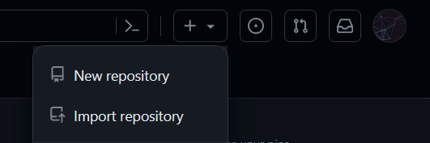
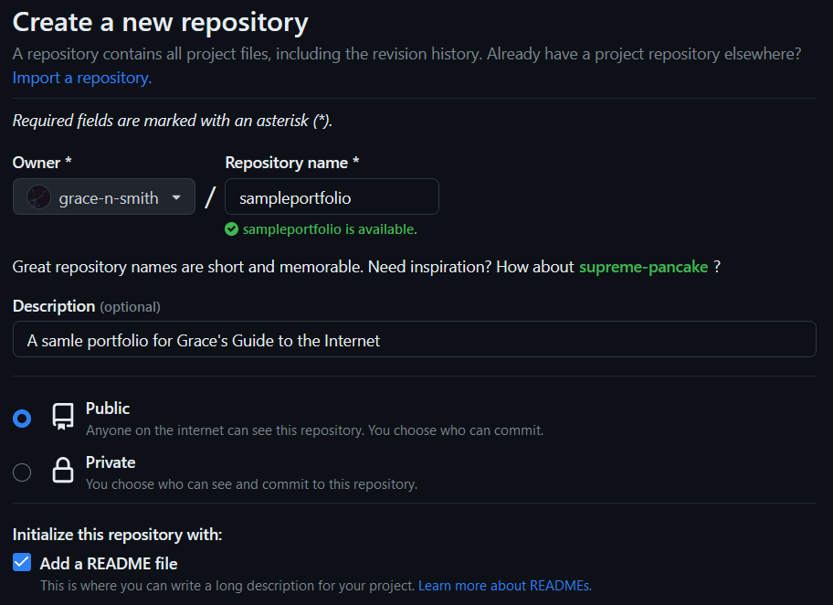
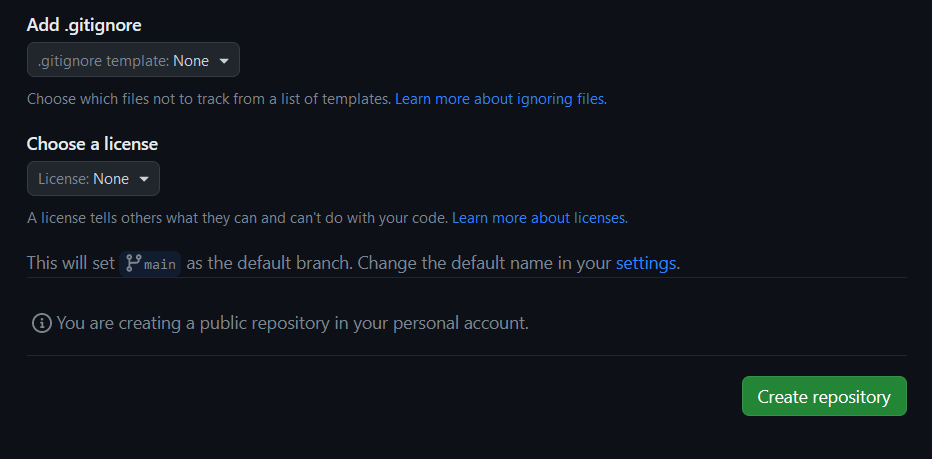
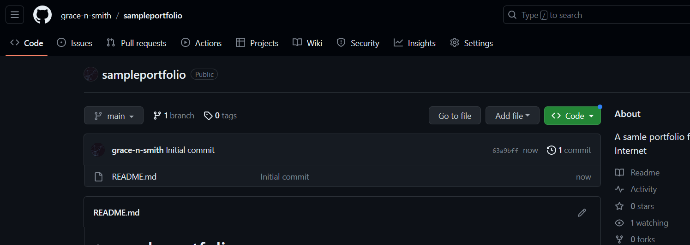

This guide is designed for those who want to make a personal site that can grow with their webdev skills, starting from zero. No experience with HTML, CSS, or terminal/console necessary. Your webiste link will be in the respectable form of username.github.io.
Please remember that this is one of many ways to create a website. Once you're comfortable, start freestyling and find what fits your needs and preferences.
GitHub is a free, cloud-based service that developers use to store and manage code. It has a user-friendly interface, and has even been used for writing books. You will be using GitHub to connect a website (that you will edit locally) to a repository (repo) under your GitHub account. The repo will be identical to a folder stored locally on your computer that contains the website's pages. GitHub will keep the files that you put in the repo accessible on the cloud 24/7, without need for a personal server.
Make a GitHub account here.
Microsoft Word is not a text editor, it is a word processor. Here are some good free options:
Sublime text: Simple minimalist interface, good colors.
Visual Studio Code: Tons of features, good text completion, but a little overwhelming sometimes.
Download GitHub Desktop and log into your GitHub account when prompted.
There are three actions in GitHub that we will regularly use.
This is the act of copying a repo to a local folder on your computer. To clone a repo, you either need a clone link or a .zip dowload, and a location to put the files.
Once you make changes to the website files locally on your computer, you need those changes to appear on the repo online to have the changes appear on your website. Making a commit is connecting the edits you made to a small text description of the edit.
Once you've selected and described the changes you want to appear in the repo by making commits, the act of approving those changes and sending them to the repo is called a Push. Only after push the changes will they appear online.
For information on the other fuctions of Github that will be useful for collaborating with other developers, look here. This information is not necessary for this website.
It's time to create an online place for your code to live. I will be creating an example repository called "sampleportfolio". Select the "new repository" option on the GitHub website under the "+" dropdown.
Here is an example of the settings that I use to set up a website. Your repo must be public to deploy it as a website.
A README file is a place where you can describe the repository for people exploring it on GitHub. It's a good thing to have your GitHub projects visible, especially if you are interested in employment in tech! Well documented GitHub projects are generally a sign of a great developer.
 Now you have a repo! Here is what mine looks like:
But right now, our repo doesn't contain any html files to deploy. Let's learn about that in the next section, your HTML Internet Debut.